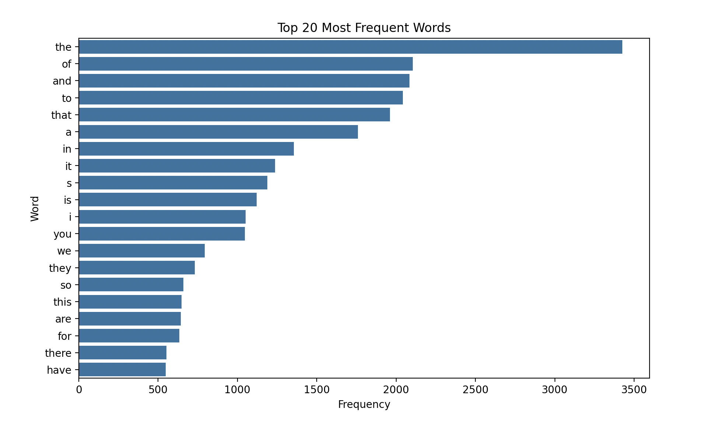
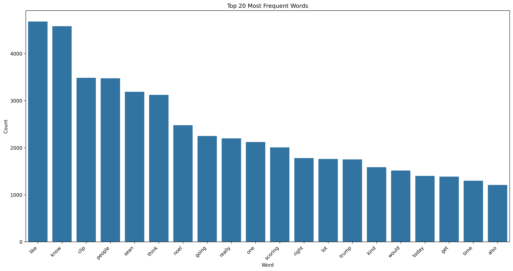
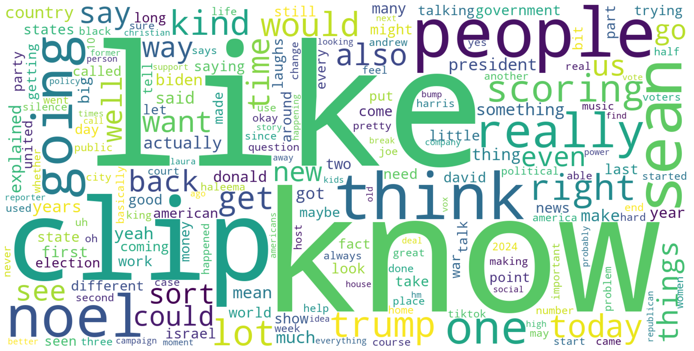
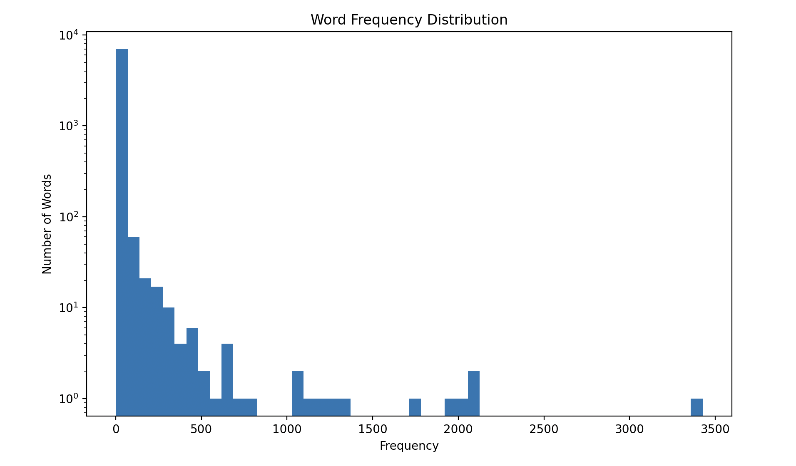

Blog Post
Sentiment Analysis on Vox Podcasts: Insights into the Voice of News
In a world that is increasingly mediated by digital communication, understanding the tone and sentiment behind content is more important than ever. Sentiment plays an important role in shaping how our messages are received and fostering emotional connections. While traditional media often communicates in a structured and edited tone, podcasts stand out for their conversational authenticity, offering a more unscripted and personal engagement with the audience. By analyzing the sentiment of Vox podcasts, we intend to uncover patterns in storytelling are told and explore how these stories differ from narratives found in traditional article media.
Three Big Questions
Given the breadth and depth of Vox’s catalog of articles and podcasts, we decided to focus on three critical questions in the comparison between Vox podcasts and articles.
- What is the overall sentiment across Vox’s podcasts, and how does it vary by topic?
- Does sentiment shift during specific episodes, perhaps reflecting the emotional arc of the conversation?
For comparison with traditional articles, we are hand-picking an article from Vox’s website that corresponds to the topic area and relative date when the podcast was posted.
Word Frequency Analysis
Unfortunately we were unable to complete the sentiment analysis portion of analysis before completion of this blog. Sentiment analysis is a complicated process that we are currently working through. We can however provide metrics on distribution of words used in the Vox podcasts.
We first found the twenty most frequent words in our dataset.

Many of these words are commonplace and don’t provide any affective meaning to our analysis so we decided to remove them from the dataset. This process is known as “removing stop words”.

Words like “like,” “know,” “think,” and “really” suggest that the conversational and relatable tone of Vox podcasts remains a strong characteristic. Recurring words like “Trump” and “Noel” indicate important and recurring characters on the show. In this case, “Noel” is one of the authors of the podcast so her name is a frequent word where the word “Trump” indicates that the Vox podcast talks about Trump a lot.

We can visualize these word frequencies in a word cloud. The large purple “people” and smaller in size word “right” indicate that Vox podcast is a human-centric podcast focused on correct decisions in terms of societal good.
We also created a histogram of the frequency of words. The highly skewed distribution of words indicate that a small number of words (the most frequent words) occur very often, while the majority of words appear rarely.

Takeaways
The frequent use of conversational words like “like,” “know,” “really,” and “think” from word distribution analysis indicate that the Vox podcast has a casual and relatable tone suggesting a slightly positive to neutral tone. However the frequency distribution and word cloud do not directly measure sentiment.
The histogram of word frequencies shows a large vocabulary, indicating varied discussions. This diversity of language could reflect shifts in tone or sentiment throughout episodes as topics and conversational dynamics evolve. One key limitation here is that these plots don’t show any actual emotive change over time, so we cannot know for certain how if the sentiment is changing throughout a podcast episode.
The major limitations in our analysis are the lack of temporal granularity and contextual ambiguity in our podcasts. These metrics are aggregated over all podcasts so we cannot know exactly when podcasts shift tone. Also, while we know which words were frequently used, we do not know the context in which words were used. The word “like” could be used conversational or formally and without context, we cannot determine if it has a positive or negative connotation. Further, aggregated analysis may obscure the unique voices and tones of individual speakers, particularly marginalized voices or dissenting opinions. As such, more analysis is needed to complete our report
Old
In our project we are specifically looking at the “sentiment” of podcast episodes and news articles. First we wanted to get a consistent type of content from both the articles and the podcast. So we decided that meant we used the same source for both, Vox. Vox has both a news podcast section called “Voxxed: Explained” and a standard print news section. This made it easy to standardize the data, consistently if they write about a topic they will create a podcast episode for that topic. Then using the podcast transcript and the print news, we used Baer’s Niave base to gain the overall sentiment of the pieces.
Unfortunately, due to scheduling difficulties and time constraints we have only analysed the podcast side of the data, although this is only one side of the story we can actually tell some interesting things about our current news climate within last year. Hopefully with more time we can go further back in time and see trends appear and how they differ or match the print media.
Looking at the first graph, it represents the frequency of words being used. This means how often a unique word appears in the podcast. And as we can see it the uniqueness of words are not that large. It seems that the frequency at which podcast use unique word trends towards less as we say more words.
Of course we have to add the word cloud, as it is just kind of a fun visualization to use(even if it can be a little bit useless when it comes to data), but we can see a lot of the common words are similar to those studies which analyze common words in books.
As we are struggling with some tech difficulties(I need to get a new computer ASAP), these vizualizations will be available to see in this code folder at the moment but will change to be in a figure folder.